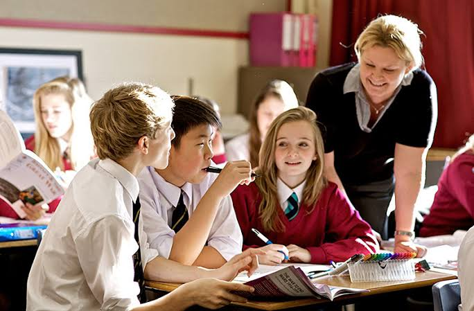

Primary
Attended Umuaja primary School Umuaja, Delta state from 2003-20012, where I obtained my primary Scool living certificate.
Secondary
Attended Umutu Mixed Secondary School Umutu, Delta State from 2012-2018, where i obtained my SSCE certificate.
Tertiary
Currently a student of Geology at Nnamdi Azikiwe University Awka, Anambra State. Started on the 14th of June 2021 till date.